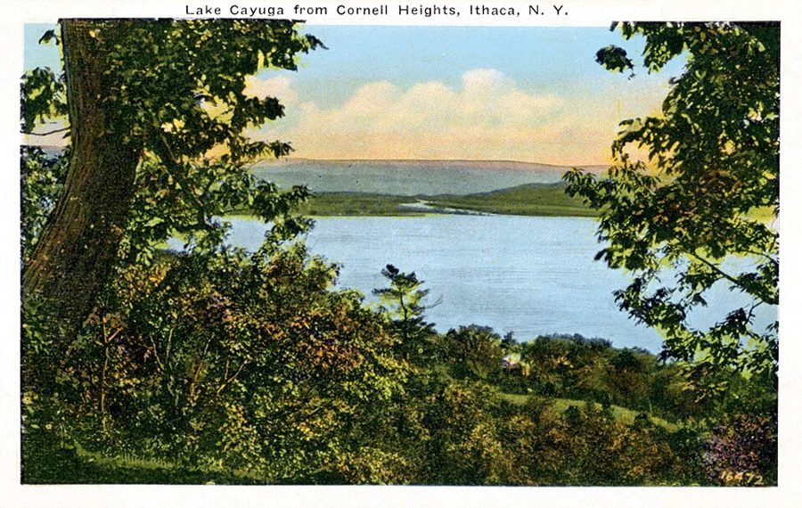
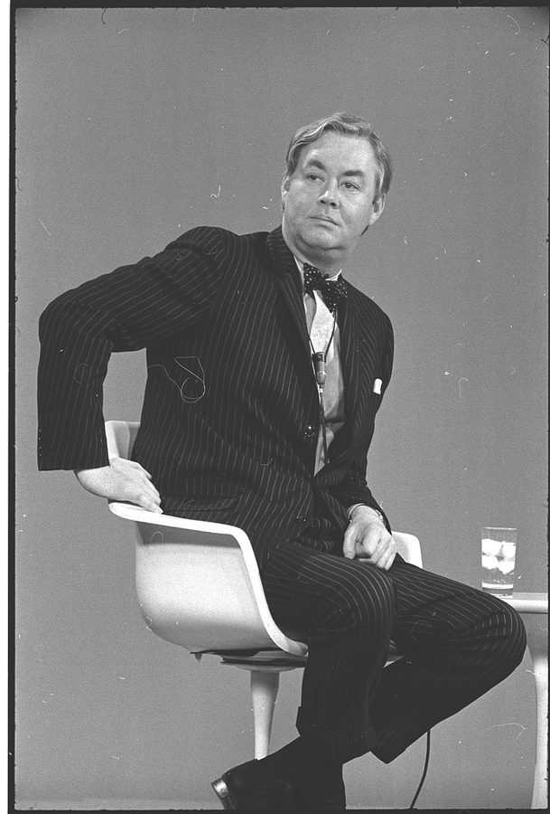
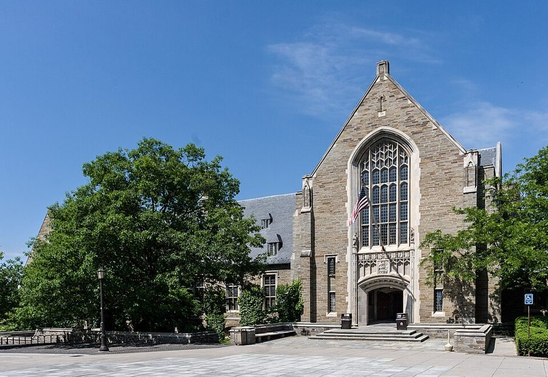
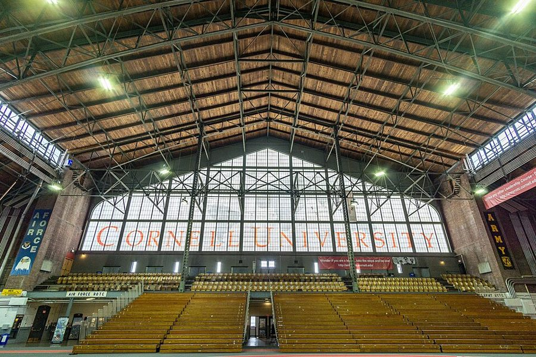

这一章在做什么
1968 年秋到 1969 年 6 月，他三十八岁，辞呈已交，在康奈尔教最后一年。四条线交替着写：博士的最后两场外语考试、不说话的儿子、替华盛顿一个组织起草的助学方案、校园里一步步升级的对峙。
读的时候留意同一个人 Hamilton 教授怎样把头两条线系在一起，以及后两条线在 1969 年春天怎样撞上。
1968.9 12 1969.2 4 6
学位
法语口试
拿到博士学位
中间：德语
儿子
先陪着，不教；几个月后，一个词一个词开口
出路
纽约的会
开始找工作
答应 Brandeis
开车去加州
助学方案
受托起草
50 亿美元的方案成稿
开会时已无人问津
校园
几次闹事
持枪占楼
这条竖线之后，上面两条线都变了
本站示意图。书里只给了少数几个确切月份（1968 年 9 月、12 月，1969 年 2 月），其余按「秋天」「春天」大致摆放。
出场的人
这一章有名有姓的真人不多，只有名没有姓的多半是化名。听书时先把这几个名字过一遍。
Earl J. Hamilton /ˈhæməltən/，男 芝加哥大学的经济史学家，真名实姓，以研究西班牙的物价史出名。这一年在宾厄姆顿客座，替芝大给作者考外语。密西西比州的白人。
my son John，这一章没提名字 快四岁了还不说话，上一章留下的心事。书里叫他 my little boy、the little fellow。
Charles /tʃɑːrlz/ 作者写信的对象，前几章就有的老朋友。这里只引了一封 1968 年 11 月的信。
Bernard /bərˈnɑːrd/，重音在后 在劳工部共事过的朋友，这时在宾夕法尼亚大学教书。一通一个多小时的电话，劝他留在学界。
Ben Rogge Benjamin Rogge，男 印第安纳州 Wabash College 的经济学教授，真名实姓。把一份没写完的书稿送给了作者。
Bill 化名，男，黑人学生 不是作者班上的学生，常来聊天。他的两件事占了第 7 节。
Professor McPhelin 上一章的 Father McPhelin，男 客座教授，是位神父。上一章里黑人学生因他课上的话静坐经济系办公室，这里是回顾。
Pearl Lucas 女 康奈尔的黑人助理院长，上一章出过场。危机里只有她和作者始终没在那份声明上签字。
Roy Ash 男，白人 加州军工企业 Litton Industries 的头面人物，后来在尼克松政府管预算。书里把公司拼成 Lytton，描述情节时以书为准。
Rocky 不是人。 第 3 节里父子俩对着录音机喊的 Rocky，是儿子仅剩的两个词之一，另一个是 wah-ee（water）。上一章交代过：他是跟着电视天气预报里的 the Rockies（落基山脉）学的。
后面的 rocky places 、rocky going 是另一个词，意思是「磕磕绊绊」，和它无关。
Bob or Ted （第 5 节）也不是具体的人，相当于「张三李四」：他打电话找各校的黑人教授，接电话的总是太太，说的总是同一套话。
背景：作者默认你知道的事
章名是一首歌

从康奈尔一侧的山上看卡尤加湖，约 1925 年的明信片。章末他开车下山，最后一眼看到的就是这片湖。Miller Art Co. 印制，公有领域，维基共享资源 I’m Movin’ On 是 Hank Snow 1950 年的乡村歌曲，唱一个人坐上火车一走了之。书里没说章名的出处，这是本站对上的。
确凿的是章末那四行：它改的是康奈尔校歌 Far Above Cayuga’s Waters ，也就是上一章的章名。上一章唱着校歌进门，这一章哼着它的歪词出门。
博士的最后一关：两门外语
那时美国的博士学位大多要求能读两门外语，通常是法语和德语，理由是要读得了欧洲的文献。书里芝大的做法是每门笔试、口试各一次，口试得由芝大的教授当面考。
in absentia 是拉丁语，指人不到场：笔试可以在外地考。这类要求后来多数学校取消或放宽了。
三个从政界借来的词
lame duck （跛脚鸭）：已经落选或任期将满、人还坐在位子上的官员。作者辞了职还要教满一年，拿它自称。
pork barrel （猪肉桶）：议员把联邦的钱弄回自己选区的拨款，引申为谁有门路谁分一块的项目。
think tank （智库）：靠合同和捐款做政策研究的机构，如兰德公司、布鲁金斯学会。书里那家没有点名。
Urban Coalition 和 lobby
1967 年夏天纽瓦克、底特律等城市发生大规模骚乱。之后，企业、工会、民权团体、教会和市长们的代表在华盛顿成立了 Urban Coalition，想合力对付城市贫困和种族问题。1968 年起由前卫生、教育和福利部长 John W. Gardner 主持。
它是民间组织，方案要变成法律，得先凑齐各方的支持再去说服国会。这种活动叫 lobbying，干这个的团体叫 lobby。
《熔炉之外》

Daniel Patrick Moynihan，1969 年 3 月，当时是尼克松白宫的顾问。他是 Beyond the Melting Pot 的两位作者之一。Thomas J. O’Halloran，公有领域，维基共享资源 Beyond the Melting Pot 1963 年出版，作者是社会学家 Nathan Glazer 和 Moynihan，写纽约的五个族群：黑人、波多黎各人、犹太人、意大利人、爱尔兰人。
melting pot（熔炉）是美国的老说法：各国移民来了都会化成同一种「美国人」。这本书说并没有化掉，几代之后各族群仍然各有各的样子。
1969 年 4 月：持枪占楼

康奈尔的学生活动中心 Willard Straight Hall，2007 年拍摄。1969 年 4 月被占的就是这座楼。Kenneth C. Zirkel，CC BY-SA 4.0，维基共享资源 书里没点楼名，也没给日期。史实是：1969 年 4 月 19 日清晨，正值家长来校的周末，Afro-American Society 的黑人学生占了 Willard Straight Hall。一批白人学生想闯进去没有成功，之后枪被带进楼里。
次日校方答应条件，学生持枪走出大楼，这一幕的新闻照片登遍全国。争的直接题目是此前几名黑人学生受的纪律处分。

Barton Hall 内部，2018 年拍摄。它原是练兵用的大厅，书里那座 armory-like building 说的就是它，只是没点名。Kenneth C. Zirkel，CC BY-SA 4.0，维基共享资源 4 月 21 日，教员大会拒绝撤销处分，等于推翻校方答应的事。22 日数千名学生聚到 Barton Hall 通宵集会。23 日教员大会改了票。校长 James Perkins 在这一年辞职，第 11 节说的校董调查就是冲着他。
作者对这几天的写法带着明确的立场，事件的经过和他的评语要分开读。
学生一方做了什么
作者笔下校方的回应
1968.4
静坐经济系办公室
拖到课结束，不表态，另开一门课
1968.12
几起更大的扰乱
含糊的声明，还送去茶点
1969.4
占楼，手里有枪
校方答应条件
随后几天
公开的威胁，私下的恐吓
教员大会先否决，后改票
本站示意图，按第 9 节作者自己的叙述整理，左边的色块一回比一回宽。这是他的看法：每让一步，下一步就更大。当事的其他各方有别的讲法。
留个记号：后面还会回来
这一章有一处作者明说「后来很要紧」，另外几处是前面埋下、这里接上的线。
两件当时不起眼的小事 第 6 节 一本偶然翻到的书，一场没赶上的讲座。作者说它们对他后来的工作起了决定作用，又说当时他还一个字没写。记住这两个名字：Beyond the Melting Pot 和 Ben Rogge。
儿子开口 第 1、3 节 接的是上一章饮水机前的那一幕。这一章只写到会说短语，下一章开头还有后续。
留不留在学界 第 5、10 节 他两次差点离开大学：一次被 Bernard 劝住，一次被 Brandeis 的一通询问截住。这个问题后面还会再来。
人怎样被自己的话困住 第 9 节 全校通宵辩论时，他躲在书库里研究 1820 年代的两本英国小册子，并说它们讲的正是这个。本站的看法：这一句是他给整场风波下的注脚。
词与短语
词条按书里出现的顺序排，小标题是原书用 • • • 隔开的各节。斜体小字是那句话里的几个词，在 Kindle 里搜它就能跳到那一句。单个的生词长按就能查，这里收的主要是词典帮不上忙的。
第 1 节 · 口试之后的闲谈
hurdle
… The last hurdle between me and …
最后一道关
本义是跨栏的栏架。
in absentia
… could be taken in absentia but …
人不到场
拉丁语，读 /ˌæbsenˈʃiə/。常见于「缺席审判」「不到场领学位」。
orals
… I took the French orals in …
口试
研究生的行话，oral examinations 的简称，常用复数。
tied up in
… have been tied up in my …
被……缠住，脱不开身
第 5 节的两处 tied up 是同一个意思。
not right now
… to talk—not right now. You …
现在先别
不是永远别教，是眼下先别教。后面的 when he feels confident and secure 是条件。
desperate enough to try anything
… was desperate enough to try anything, …
走投无路，什么都肯试
desperate 不是「绝望放弃」，是急得什么都愿意做。
第 2 节 · 纽约的会
word spread
… As word of my summer program …
消息传开
不带冠词的 word = 消息、风声。第 9 节的 the word that was heard around campus 同此。
infest the land
… and education who infest the land. …
遍地都是（像害虫）
infest 用于老鼠、虱子。他把自己也算进这支「专家」大军里，是自嘲。
if not
… awkward question, if not an incomprehensible …
甚至可以说是
A, if not B：B 比 A 更进一步。不是「如果不」。
break up into
… the meeting broke up into smaller …
（大会）散成（小组）
不是「破裂」。
snapped up
… have all been snapped up by …
被抢光了
医学院 5 月早就录取完了，合格的学生已各有去处。
see that
… we will see that they graduate.’” …
保证（让他们毕业）
= see to it that，「负责办到」。不是「看见」。
give out the grades
… “Well, they give out the grades.” …
分数是他们打的
整节的包袱在这六个词上：怎么保证毕业？打分的就是他们。
maneuver through
… that they maneuver through medical school?” …
想办法弄过关
maneuver 本是军队调动，这里指靠手腕把人送毕业。“doctors” 的引号是「所谓的」。
hold them off
… I held them off, this year. …
把他们顶回去了
hold off = 挡住攻势。逗号后的 this year 是「今年算是」，下一句就说明年难讲。
another story
… doing this is another story.” …
那就难说了
turn out
… was already turning out black doctors …
成批培养出
工厂「出产」的那个 turn out，不是「结果是」。
caucus
… a black caucus was held in …
（同一派的人）关起门来开的会
读 /ˈkɔːkəs/，美国政治用语。
fortified by
… now fortified by mutual support, began …
有了……壮胆
fortify 本义是给城堡加固。
第 3 节 · 录音机
lame-duck
… As a lame-duck faculty member, I …
已经辞了职、只等期满的
见上面「三个从政界借来的词」。
no longer any business of mine
… was no longer any business of …
再也不关我的事
business = 该管的事。
photography buff
… Still a photography buff, I took …
摄影迷
buff = 业余爱好者。他在海军陆战队就是干摄影的，见第 4 章。
speech therapist
… him to a speech therapist. She …
言语治疗师
专门矫正说话障碍的职业。Ithaca College 是镇上的另一所学校，不是康奈尔。
personable
… attractive and personable, which no doubt …
讨人喜欢，让人愿意亲近
不是 personal。后半句是当爸爸的在开儿子的玩笑。
sign
… this was the sign he saw …
路牌
美国公路在铁路道口前立着警示牌。作者画的是这块牌子，孩子认得它预告铁轨。
without being about to tell
… without being about to tell anybody …
却没法告诉别人
原书这里印的是 about，按文意应是 able，多半是排印错误。
down the drain
… on to phrases like “down the …
顺着下水口流走了
这里是孩子学会的短语，字面意思。第 9 节末尾作者自己又用了一次，那回是比喻：白费了。
第 4 节 · 自由人
unfinished business
… next large item of unfinished business …
没了结的事
原是会议议程上的「未决事项」。
rocky places
… have more rocky places for me …
磕磕绊绊的地方
rocky = 多石头的，引申为不顺。和儿子说的 Rocky 无关。
You’re a free man
… “You’re a free man.” …
你自由了
平常是对出狱的人说的。下一段作者就接着这个比喻往下写。
the irony was not lost on me
… the irony was not lost on …
这里头的讽刺我不是没看出来
be lost on 某人 = 某人没领会。密西西比是当时种族隔离最严的州。
of the hour
… racial rhetoric of the hour and …
眼下正时兴的
hour 不是小时。the man of the hour = 当下的风云人物。
第 5 节 · 还留不留在大学
Commencement
… go to the Commencement ceremonies at …
毕业典礼
字面是「开始」，美国大学专指毕业典礼。他三个学位的典礼一个也没去。
approached
… in being approached or interviewed by …
被（对方）主动找上门
approach 某人 = 来探口风、来接洽。
guru-in-residence
… expected to be guru-in-residence to the …
驻校导师（专给黑人学生当精神领袖）
作者造的词，仿 writer-in-residence （驻校作家）。第 10 节他当面又说了一遍。
make it a point to
… I made it a point to …
特意要做到
Bob or Ted
… hearing how Bob or Ted was …
某某人（泛指）
随手举的名字，不是具体的两个人。
mind the store
… “Who’s minding the store while all …
正事谁在管
字面是看店。店主跑出去了，铺子没人照看。
fight brushfires
… was tied up fighting brushfires. In …
到处救火
brushfire 是灌木丛的野火，扑了这处那处又起。
Who needs it?
… “Who needs it?” I asked myself, …
何苦受这个
反问句，意思是「我才不要」。
ways and means
… and that ways and means could …
办法，门路
固定搭配，两个词合起来就是「办法」。
toll
… minimize the toll of campus politics. …
（付出的）代价，损耗
本义是过路费、伤亡数。
第 6 节 · 一本书，一份手稿
a teddy bear of a man
… a big, teddy bear of a …
泰迪熊一样的大个子
a(n) A of a B ：像 A 一样的 B。a giant of a man 、a gem of a book 同此。
mine to use as I pleased
… mine to use as I pleased. …
归我了，随我怎么用
as I pleased = 随我的意，和「高兴」无关。
第 7 节 · Bill 的两件事
on good terms with
… was on good terms with them. …
和……处得不错
terms 这里是「关系」。
who can be called Bill
… who can be called Bill, was …
姑且叫他 Bill
作者明说这是化名。
an interesting study
… was an interesting study, even though …
一个值得琢磨的人
study 指「研究的对象」。
by instructor’s permission only
… is by instructor’s permission only. That …
须经任课教师同意才能选
美国大学课程表上的固定说法。
technically
… all-black class without technically violating the …
从条文上说
不是「技术上」。言下之意：实质上违反了。
knowingly
… to apply,” he said knowingly. “Certain …
一副「你懂的」的神气
前面的 advisable 也是含蓄说法：不申请会有麻烦。
certain people
… “Certain people expect you to apply. …
有些人（不便点名）
as the year wore on
… As the year wore on, I …
这一年慢慢过下去
wear on：时间拖着往前走，多半不愉快。
Be a wise guy
… I said. “Be a wise guy. …
行，你就抬杠吧
wise guy = 自作聪明、爱顶嘴的人。作者认了自己前后不一，语气是笑着的。
rocky going
… indicating that it was rocky going. …
走得很艰难
going = 路况、进展。
write it off as
… I wrote it off as a …
认定它是（一笔赔掉的账）
write off 是会计上的「核销」。
C+
… “Got a C+ in that course!” …
C 加，中等偏下
美国按 A 到 F 打分。平常不值得夸耀，但那门课连系里的老师自己答卷也只得了一半的分。
“relevant”
… of his most “relevant” experiences in …
「贴近现实的」
当年学生运动的口号：课程要 relevant，要和黑人的处境直接相关。作者把这个词反过来用在一门硬课上。第 9 节的 “irrelevance” 是同一个玩笑。
第 8 节 · 五十亿美元的方案
line up … behind
… to line up their political support …
把（各方的支持）拉齐，站到……后面
pork barrel
… become another pork barrel program to …
分肥的（项目）
见上面「三个从政界借来的词」。
lobby
… against a well-organized academic lobby, to …
游说团体
不是大堂。这里指替大学向国会要钱的一方。
outright grants
… would get substantial outright grants and …
直接给、不用还的补助
grant 是白给的，loan 要还。outright = 不附条件的。
hammer out
… to hammer out a final proposal …
反复磋商，敲定
did not deign to
… did not deign to walk down …
连……都不屑于
deign 读 /deɪn/，g 不发音。一个从加州飞来，一个不肯走过一条街。
high-flown
… to the high-flown public rhetoric of …
唱高调的
call the shots
… white “subordinate” was calling the shots. …
说了算
subordinate 加引号：名义上是下属，实际拿主意的是他。
the net result
… The net result was that it …
算下来的结果
net = 净的。上一章末尾他也用过这个说法。
big labor
… interest and support of big labor. …
大工会
和 big business （大企业）成对的说法，带点贬义。AFL-CIO 是美国最大的工会联合组织。
Little did we know
… Little did we know that this …
我们哪里知道
否定词放句首，主谓倒装。回忆录里预告「后面要出事」的套路句。
the least of our problems
… be the least of our problems. …
最不要紧的一个麻烦
意思是：真正的大麻烦在别处。
第 9 节 · 那个春天
all hell was going to break loose
… all hell was going to break …
要出大乱子
not unrelated to
… of power was not unrelated to …
和……大有关系
双重否定，往轻里说。
capitulation
… and a total capitulation to force, …
屈服，投降
这一节的关键词，动词 capitulate 也出现了两次。
deliver the results
… cannot deliver the results that more …
拿出成果
deliver = 兑现。后面的 uninhibited leadership （无所顾忌的领头人）是委婉说法。
probing actions
… A series of probing actions by …
一次次试探
军事用语：小股出击，看对方防线哪里是空的。
stalling
… by (1) stalling until McPhelin’s last …
拖时间
make the issue moot
… was over, making the issue moot; …
让这件事不必再议
moot 是法律用语：事情已经过去，裁决没有意义了。
ringing declaration
… issuing a ringing declaration of concern …
掷地有声的声明
反话：声音很响，内容是空的。
on the merits
… taken on the merits of the …
就事情本身的是非
法律用语。merits 不是「优点」。
refreshments
… and refreshments provided by the administration …
茶点
会议、招待会上的点心饮料。
repudiate
… the faculty repudiated the administration’s agreement, …
拒不承认
这里 the faculty 指全体教员的大会，the administration 是校长一班人。两者不是一回事，这一段的转折全在这里。
it fooled no one
… Yet it really fooled no one, …
谁也没骗过
前面 “deeper”、“understanding” 的引号都是「所谓的」。
man from Mars
… called me a “man from Mars” for …
火星来的人
说他对身边的大事像个局外人。
junior men
… of the more shallow junior men …
资历浅的教员
junior / senior 在大学里指有没有终身教职，不是年纪。
wind-chill factor
… When they sensed the wind-chill factor, …
（屋里的）寒气
天气预报用语：风寒指数，有风时体感比气温低多少。指他那句话有多冷。
to the bitter end
… blacks refused to the bitter end …
顶到最后
scholastic discussions over fine points
… the scholastic discussions over fine points …
在细枝末节上的经院式争论
scholastic 这里指中世纪经院哲学那种抠字眼的辩论，是贬义。fine points = 细微之处。
the library stacks
… back in the library stacks. I …
图书馆的书库
stacks 是一排排书架的库区。前面的 a study 是书库里分给教员的小研究间。
the vocal few
… the moment among the vocal few. …
嗓门大的少数人
vocal = 爱出声表态的。
sour … on
… had soured Congress on the whole …
让（国会）对……倒了胃口
sour 作动词，本义是变酸。
第 10 节 · 去 Brandeis 问一问
on the job front
… On the job front, I was …
找工作这头
front = 战线。
bow out of
… about to bow out of the …
（体面地）退出
bow 是鞠躬，读 /baʊ/。
think tank
… offer from a think tank in …
智库
shot back
… of the society shot back heatedly. …
立刻顶了回来
口气很冲，内容却是赞同。
paternalism
… “To hell with white paternalism. We …
家长式的照顾
把对方当孩子，替他做主、对他放宽。这一章和下面几章的关键词。To hell with = 去他的。
civil
… exchanges were always civil, though often …
客气，守礼
不是「公民的」。后面的 sharp 是「言辞尖锐」：吵得凶，但不失礼。
We’ll look for you
… “We’ll look for you in the …
我们等着你来
look for = 盼着见到，不是寻找。fall 是秋季学期。
第 11 节 · 下山
weathervane
… “a veritable weathervane following the shifting …
风向标
屋顶上随风转的铁公鸡。veritable = 名副其实的。
picked up by
… The story was picked up by …
被（别的报刊）转载
story 是新闻报道。
a passing sensation
… something of a passing sensation on …
轰动一时（很快过去）
trustees
… context of a trustees’ investigation of …
校董
美国私立大学的最高权力在校董会（board of trustees），校长由它任免。
new-found notoriety
… My new-found notoriety led to my …
新得的「恶名」
notoriety 是坏名声。用在自己身上是自嘲。
值得停下来的句子
He had also set my son free—from silence.— 第 4 节，德语口试通过之后。本站译：他还让我的儿子也得了自由：从沉默里。
破折号把 from silence 留到最后才说。前一段 Hamilton 那句「你自由了」讲的是学位，这里把同一个 set free 接到孩子身上，第 1 节和第 4 节就此合成一件事。
紧接着是一个问句：如果他当时信了流行的说法，不肯和一个密西西比的白人深谈呢？作者没有回答。全章讲种族的地方很多，这是唯一一处落在他自己家里的。
A white millionaire showed more interest in low-income students than our “black leaders.”— 第 8 节，游说碰壁之后。本站译：一个白人百万富翁对低收入学生的关心，比我们的「黑人领袖」还多。
引号是这一句的要害：加在 black leaders 上，等于说「号称的」。our 也要读出来，他是站在黑人一边说这话的。
这是他的判断，下得很重，依据是这一节里的两次碰壁。他后来的书常把「替某群人说话的组织」和「那群人自己的利益」分开来看，这里是书中较早的一次。读的时候把它当作他的看法，不必当作定论。
检查一下理解
先在心里答，再点开。答错的那题，回书里把那一节再读（或再听）一遍。
1. Hamilton 教授给的建议，是一套教孩子说话的方法吗？ 不是，正相反：他让作者眼下先别教，多陪、多带着孩子，等孩子觉得安心了自己会说。作者照做了几个月，等孩子又肯让他抛着玩，才拿出录音机，而且全当游戏。
2. Hamilton 说「你自由了」，作者为什么说这里有讽刺？ 因为放他「出狱」的是一位密西西比州的白人，而密西西比是种族隔离最严的地方。作者是带着好感说这话的：他接着写，同一个人也让他儿子摆脱了沉默。
3. Bill 在名单上没找到自己的名字，为什么反而笑了？ 他本来就不想上那门课。那门课只收任课教师挑中的黑人学生，他觉得不申请会惹麻烦，所以申请了；没被选上，他就既交了差，又能去选别的课。作者用这件事写黑人学生之间的压力。
4. 助学方案最后没成，是因为输给了那个替大学要钱的对手方案吗？ 不是。作者特意说那个对手后来成了最小的麻烦。真正的原因是 1969 年春天各地校园的暴力事件（康奈尔是其中之一）让国会对新的助学拨款没了兴趣，等到开会时已经没人要听。
5. 教员大会先否决、后改票。按作者的说法，改票的真实原因是什么？他讽刺的又是什么？ 他认为真实原因是受到威胁、不愿为这件事闹到开枪。他讽刺的不是害怕本身，而是教授们不肯承认，非要说成是自己忽然对黑人有了更深的「理解」。这是作者的解读。
6. Brandeis 的学生负责人「激动地顶回来」，是在反驳作者吗？ 不是。口气很冲，说的却是「我们也不信那一套」：不要白人的家长式照顾，他们是来念书的。在场的人意见并不一致，也有很多人不同意作者，但都敢公开说、说得客气，这才是他决定去的原因。